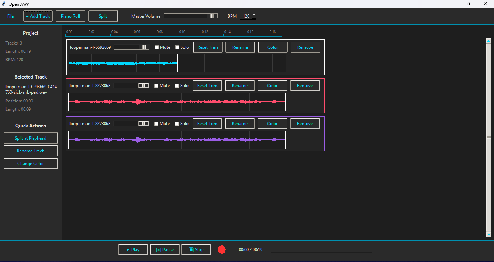
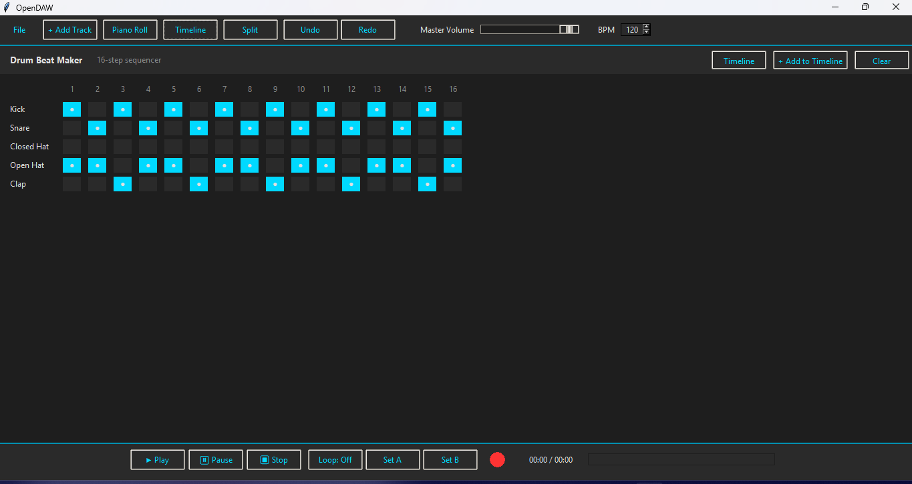
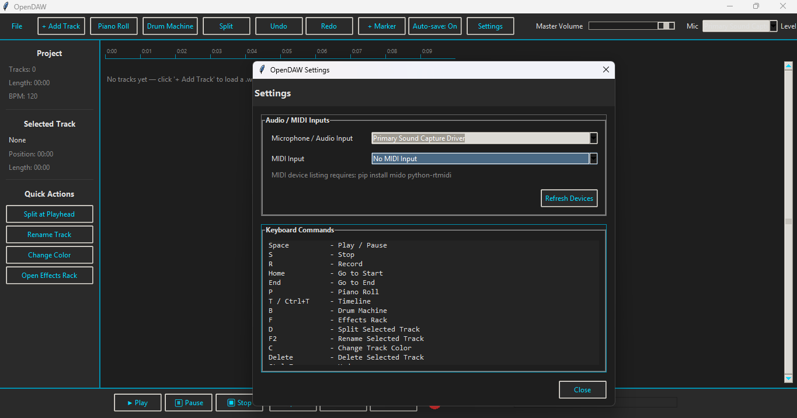
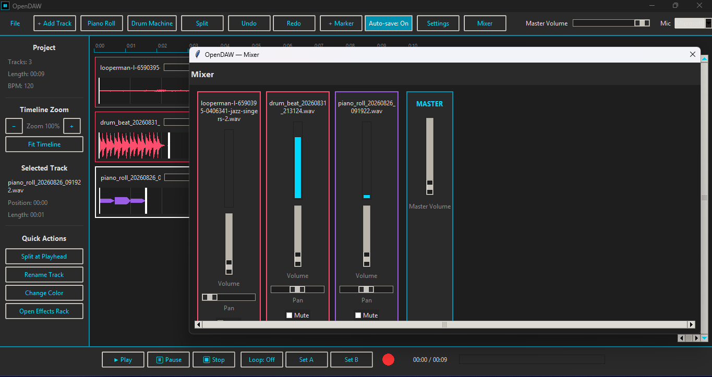
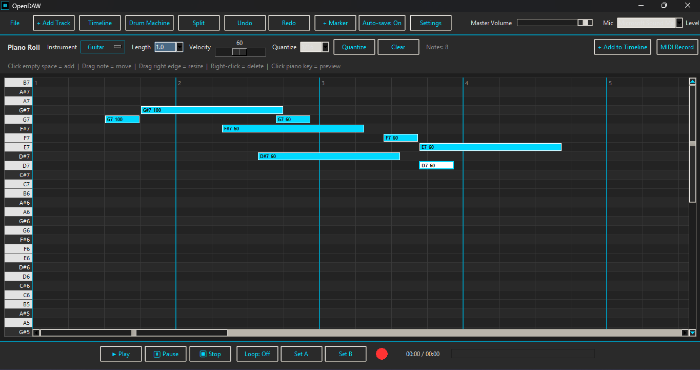
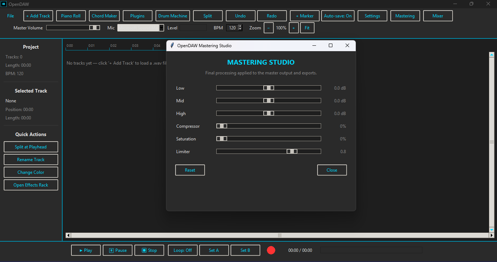

OpenDAW
A free, open-source digital audio workstation made with Python.
GitHub DownloadAbout
OpenDAW is a lightweight desktop music production app built as an open-source project. It is designed to keep music creation simple while providing a practical workflow for making and editing music.
Screenshots






Run from source
Install Python and the requirements, then run:
pip install -r requirements.txt python run.py
Windows
Download the Windows release, extract it, and open OpenDAW.exe.
Open source
OpenDAW is open source. The source code and project development are on GitHub.
Replace YOUR-USERNAME/OpenDAW with your actual GitHub repository.